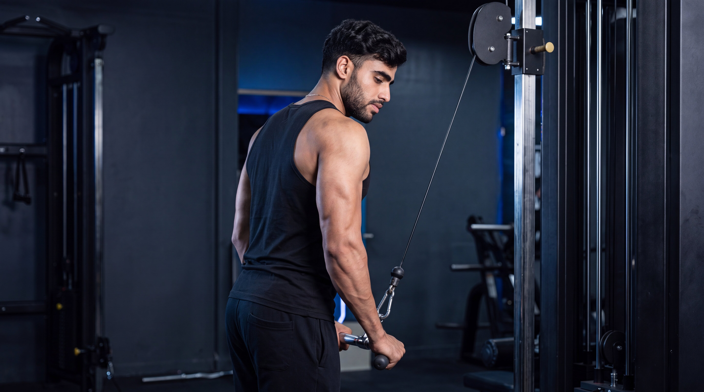
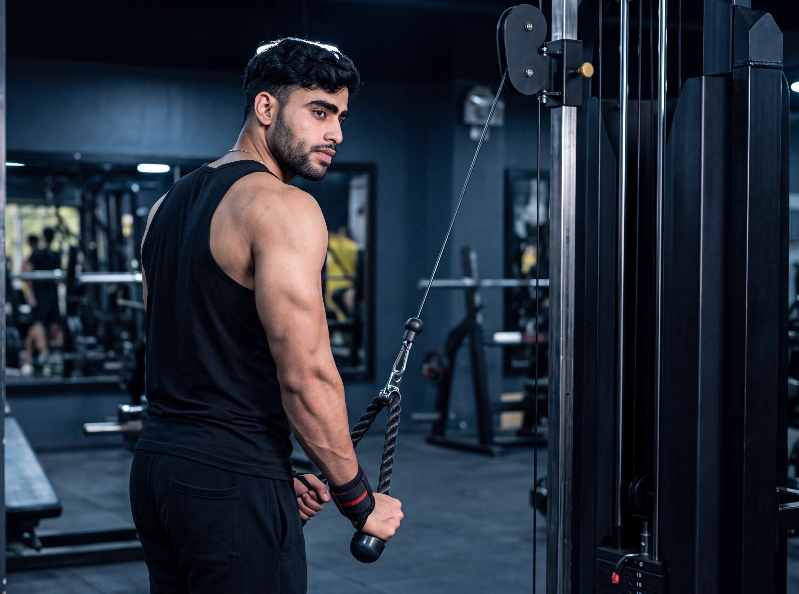
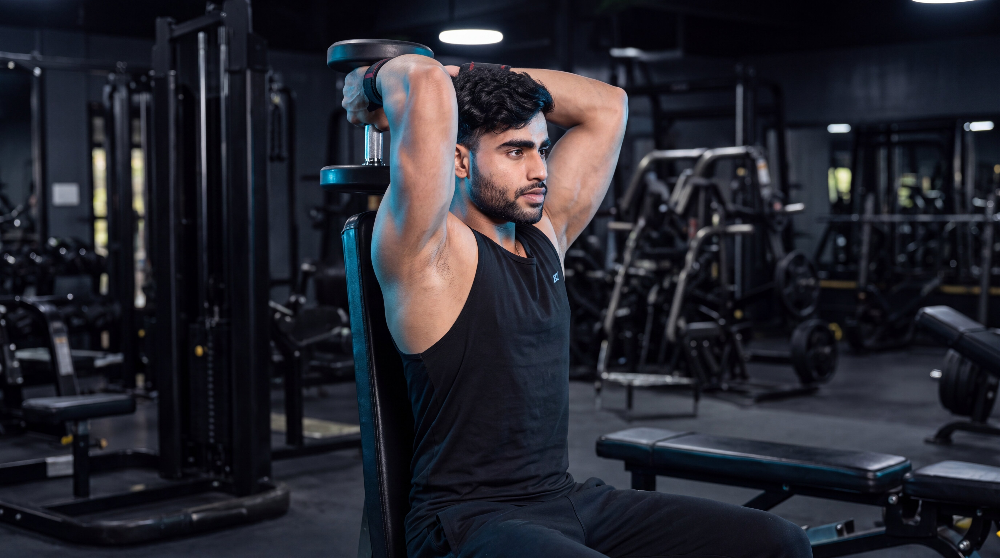
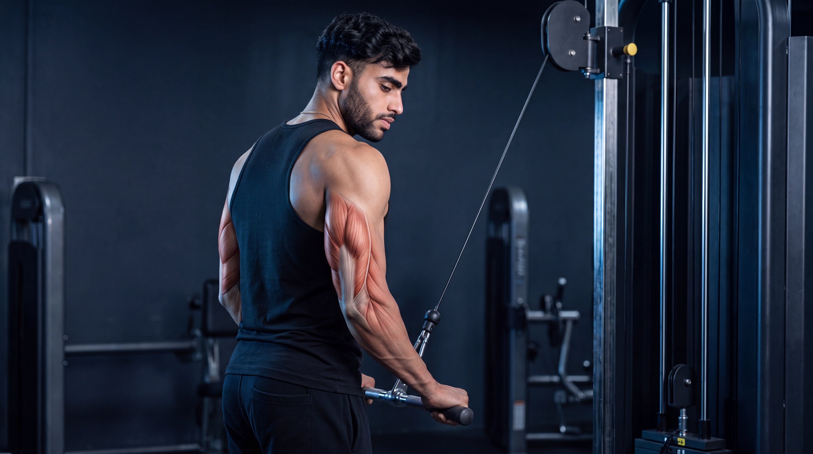
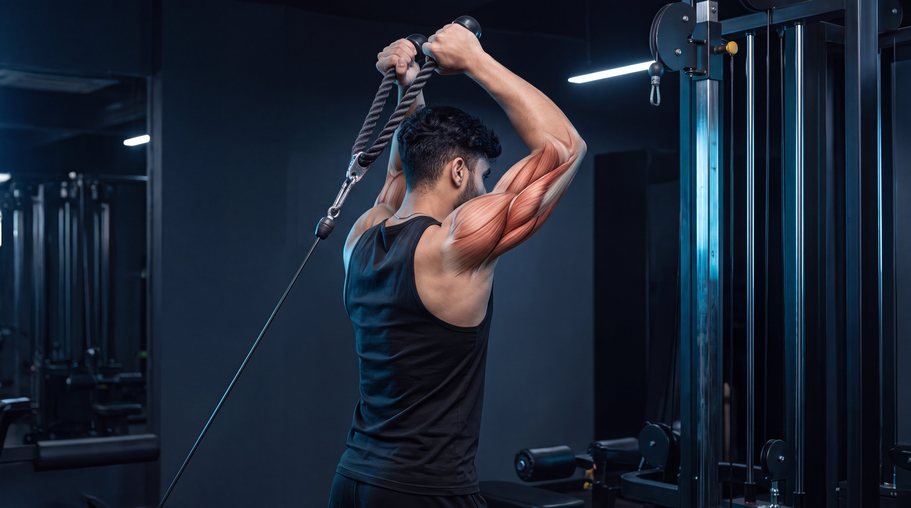
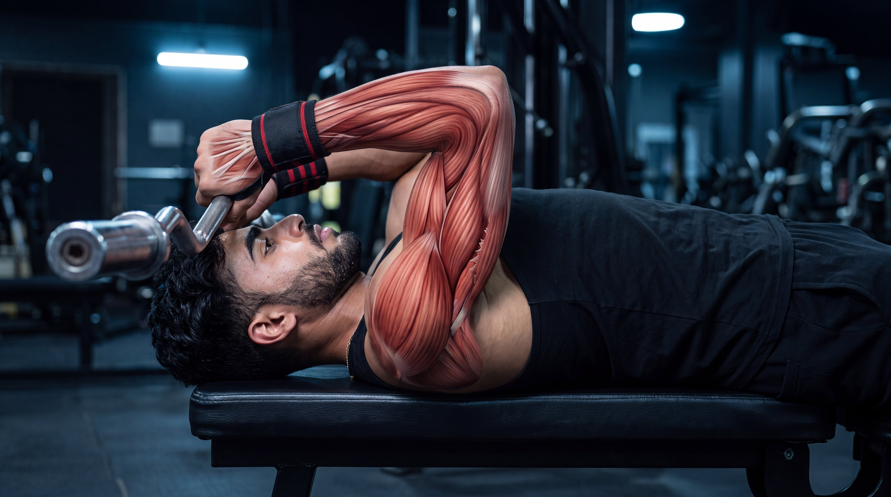

BeginnerCable Triceps Pushdown
Build triceps strength with a controlled cable movement that keeps continuous resistance on the back of the upper arms.
View ExerciseExplore step-by-step triceps exercise guides designed to help you master proper form, understand muscle activation, avoid common mistakes, and build stronger, more developed arms with confidence.

Explore our triceps exercise library and learn proper technique, muscle activation, common mistakes, and practical coaching tips for every movement.

BeginnerBuild triceps strength with a controlled cable movement that keeps continuous resistance on the back of the upper arms.
View Exercise Beginner
Beginner
Train the triceps with a neutral grip while separating the rope naturally at the bottom of each controlled repetition.
View Exercise Intermediate
Intermediate
Challenge the triceps in an overhead position while maintaining continuous cable tension through a controlled range of motion.
View Exercise
IntermediateDevelop overhead triceps strength using a dumbbell while emphasizing controlled elbow extension and stable upper-arm positioning.
View Exercise Intermediate
Intermediate
Build triceps strength with a controlled lying extension that isolates elbow movement using an EZ curl bar.
View Exercise Intermediate
Intermediate
Build pressing strength and triceps power with a narrower grip that increases triceps involvement during elbow extension.
View ExerciseBuild powerful triceps and pressing strength using a controlled upright dip position on parallel bars.
View ExerciseIsolate the triceps through controlled elbow extension while keeping the upper arm stable beside the torso.
View ExerciseDifferent triceps exercises serve different purposes. Choose your movement based on whether you want to build pressing strength, emphasize the long head, isolate the triceps with greater control, or improve strict elbow extension and contraction.
Focus on compound pressing movements that allow progressive overload while challenging the triceps through powerful, controlled elbow extension.
Use overhead extension movements to train the triceps with the arms raised, placing the long head in a lengthened position through controlled elbow extension.
Choose cable pushdown variations when you want stable, controlled elbow extension and continuous resistance through a repeatable range of motion.
Develop greater control through focused isolation movements that challenge the triceps across different arm positions while minimizing unnecessary momentum.
Go beyond the surface. Explore cinematic anatomy videos that reveal how your triceps, elbows, and movement mechanics work during every repetition.
Watch what happens beneath the skin as the triceps contract and the elbows extend through every controlled phase of the cable triceps pushdown.
See how the triceps contribute as the elbows extend against cable resistance.
Understand how stable upper arms and controlled elbow extension shape the movement.
Connect anatomy with better exercise execution and controlled triceps tension.
Select an exercise to explore its cinematic under-the-skin breakdown.

Hindi
Hindi
HindiBuilding stronger triceps is not only about lifting heavier weights. Exercise selection, arm position, controlled elbow extension, and consistent progression all shape long-term strength and muscular development.
Master the fundamentals first. Then make every repetition more purposeful.
Pushdowns, overhead extensions, and compound presses challenge the triceps from different positions. Use a balanced selection of movements to develop strength, control, and complete triceps development.
During isolation exercises, keep your upper arms controlled while the elbows bend and extend through a comfortable range of motion. Avoid unnecessary shoulder movement or momentum.
Progress does not always mean adding more weight. More controlled repetitions, improved technique, greater range of motion, or gradual load increases can all represent meaningful progress.
Compound movements like close-grip bench presses and dips build pressing strength, while extensions and pushdowns provide more direct triceps training. Use both strategically.
Get clear, practical answers to common questions about triceps exercises, training frequency, technique, exercise selection, and long-term progression.
For many people, around two to four triceps exercises in a workout can be enough, depending on training experience, weekly frequency, total pressing volume, and recovery. Focus on quality sets and purposeful exercise selection rather than adding more movements unnecessarily.
Many people train the triceps one to three times per week depending on their program, experience, recovery, and total weekly volume. Remember that the triceps also work during pressing exercises for the chest and shoulders, so direct and indirect training should both be considered.
Both can be useful. Cable exercises provide consistent resistance and are often easy to control, while dumbbells, barbells, and bodyweight movements offer additional ways to build strength. Beginners should choose exercises they can perform comfortably with stable, repeatable technique.
Some surrounding muscles naturally contribute to stabilizing triceps exercises, but excessive discomfort may be influenced by exercise choice, load, range of motion, elbow position, or technique. Use controlled resistance, avoid forcing painful positions, and choose movements that feel comfortable for your joints.
Overhead extensions are not mandatory, but they can be useful because the raised arm position places the long head of the triceps in a more lengthened position. Combining overhead work with pushdowns and pressing movements can provide useful variety across your training program.
Compound pressing exercises can provide significant triceps training, especially when progressive overload is applied consistently. However, direct isolation exercises such as pushdowns and extensions can complement compound work by adding focused triceps volume across different arm positions.
Training needs vary between individuals. Choose exercises and training volume that match your experience, goals, recovery, joint comfort, and overall program.
Strength is built through balanced training. Explore more muscle groups, discover new exercises, and keep building your knowledge one movement at a time.